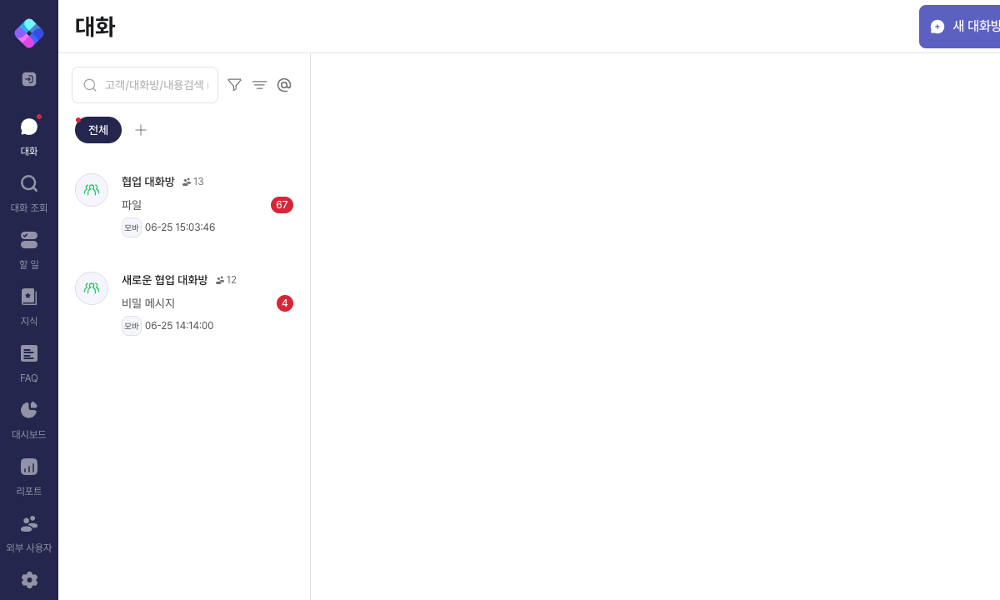
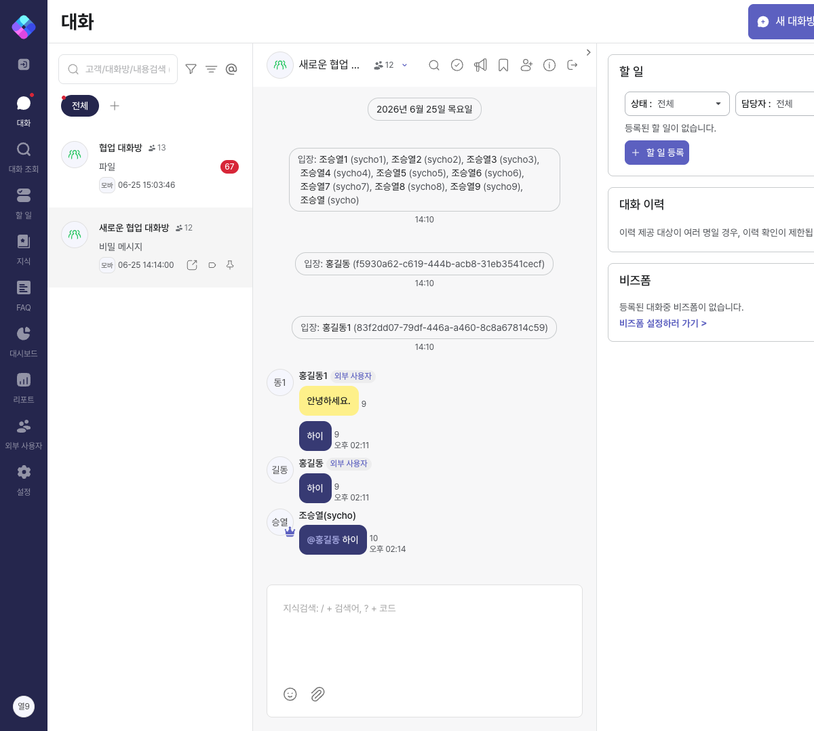
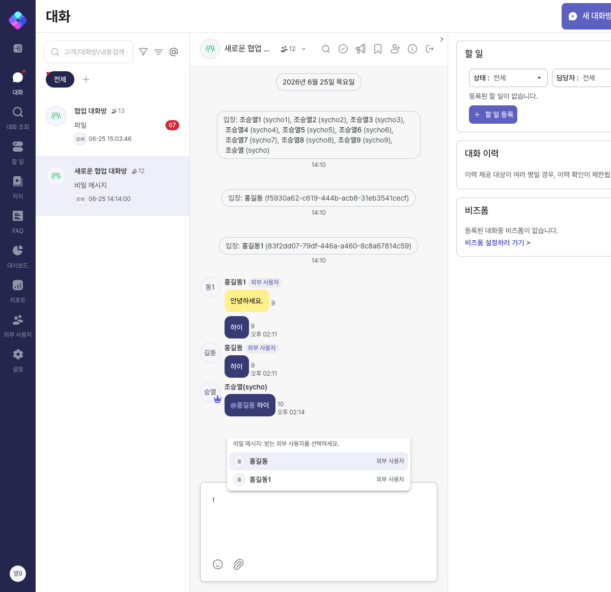
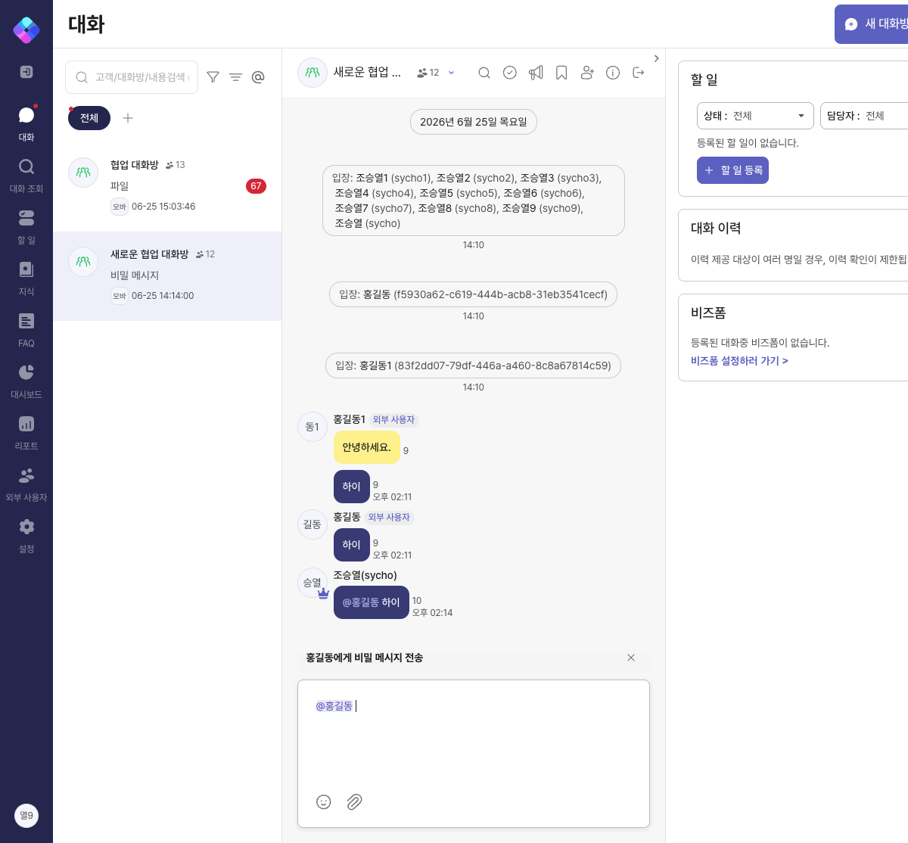
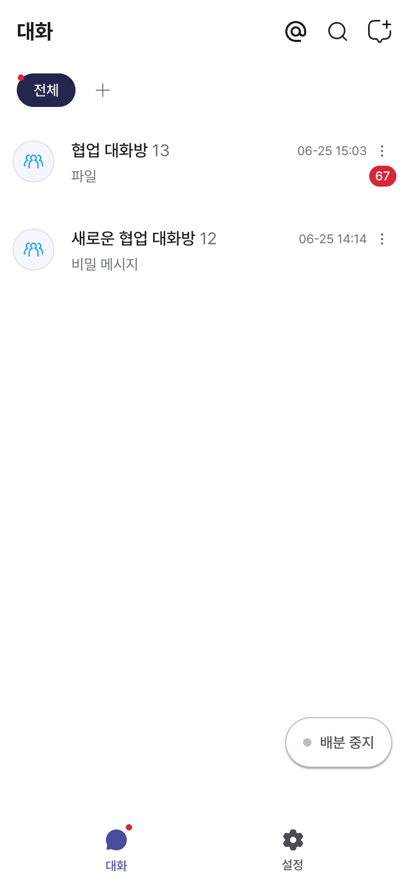
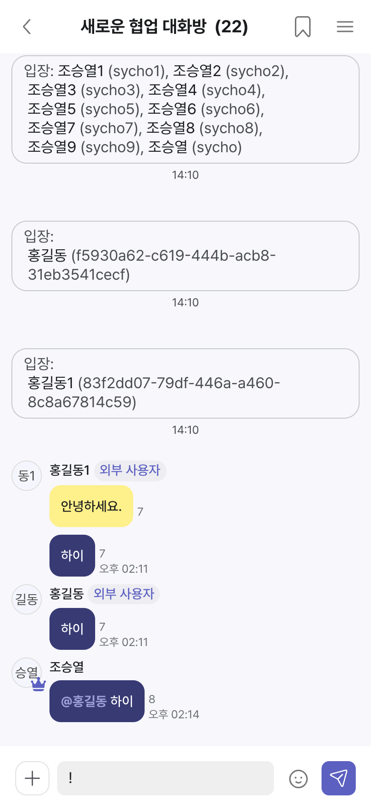
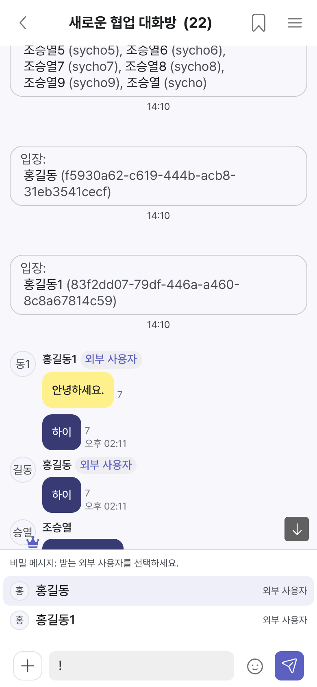
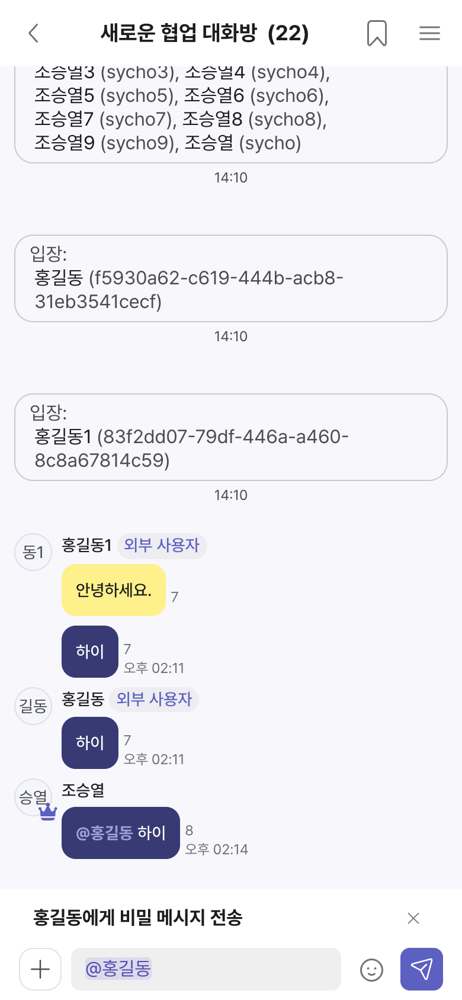
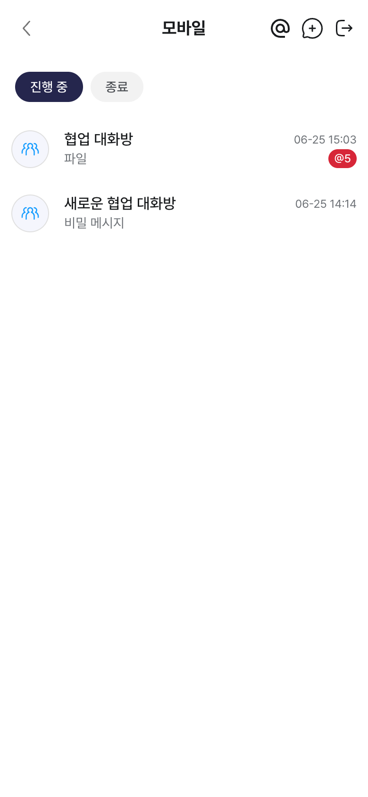
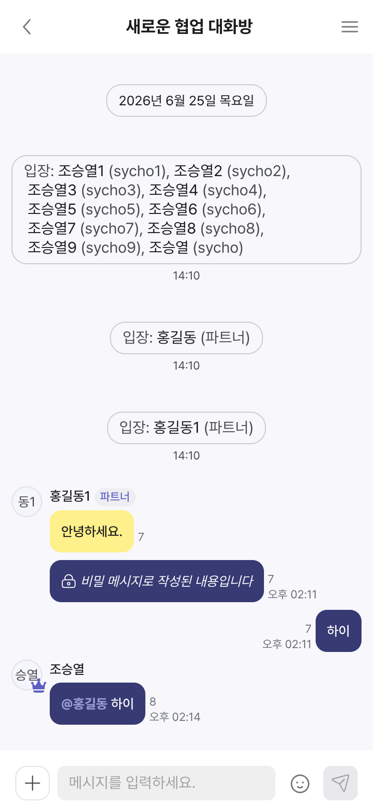

내부 사용자가 특정 외부 파트너에게만 보이는 비밀 메시지 — PC · 모바일 · 파트너 3개 화면
협업 대화방에는 내부 사용자(상담사)와 외부 파트너가 함께 참여한다. 비밀 메시지는 내부 사용자가 특정 외부 파트너에게만 보이도록 보내는 메시지다. 권한이 없는 참여자에게는 내용이 노출되지 않는다.
! 를 입력하면 비밀 메시지를 받을 파트너 선택 화면이 뜬다. (파트너 화면은 + 도구 메뉴로도 진입)같은 비밀 메시지라도 보는 사람에 따라 노출이 달라진다.
| 보는 사람 | 내부 사용자에게 보낸 비밀 | 본인이 받는 비밀 | 다른 파트너에게 보낸 비밀 |
|---|---|---|---|
| 내부 사용자 | 열람 | 열람 | 열람 |
| 외부 파트너 — 수신자 | — | 열람 | 🔒 잠금 안내 |
| 외부 파트너 — 비수신자 | 🔒 잠금 안내 | — | 🔒 잠금 안내 |
dev 환경(cowork-dev-*)에서 실제 로그인 후 캡처. 동일한 협업 대화방을 내부 사용자와 파트너 시점으로 비교한다.










@홍길동 하이 는 네이비 버블로 정상 노출된다.
내부 사용자(PC/모바일) 화면에서는 동일 메시지가 모두 열람된다 — 2.1 열람 권한과 정확히 일치한다.
| 요소 | 표시 내용 | 비고 |
|---|---|---|
| 비밀 메시지 버블 | 네이비 #373A73 배경 + 흰 본문 | 일반 버블과 즉시 구분 |
| 비밀 멘션 텍스트 | 라벤더 #9DA0D9 | 네이비 배경 위 가독 확보 |
| 잠금 안내 버블 | 자물쇠 아이콘 + “비밀 메시지로 작성된 내용입니다” | 권한 없는 참여자 전용 표시 |
| 작성 안내 배너 | 입력폼 위 전체너비 “OO에게 비밀 메시지 전송” + 닫기(X) | 답장 안내와 단일 영역으로 통합(겹침 방지) |
| 대화 목록 / 알림 | 마지막 메시지가 비밀이면 “비밀 메시지”로 표기 | 파일이 “파일”로 보이는 방식과 동일 |
! → 받을 파트너 선택 → 상단에 ‘OO에게 비밀 메시지 전송’ 안내 표시 → 전송.! 입력 또는 + 도구 메뉴의 ‘비밀 메시지’로 진입(기존 🔒 토글은 제거).비밀 메시지를 받을 수 없는 파트너에게는 멘션 알림과 안 읽은 멘션 뱃지(@N)가 생기지 않도록 집계를 바로잡았다.
(이전에는 @전체 같은 단체 멘션이 펼쳐질 때 권한 없는 파트너에게도 뱃지가 잘못 붙었다.)
| 화면 | 계정 | 결과 |
|---|---|---|
| PC | 내부 사용자 | ✅ 정상 진입 |
| 모바일 | 내부 사용자 | ✅ 정상 진입 |
| 파트너 | 외부 사용자(이름/전화) | ✅ 정상 진입 |
| 시나리오 | 대상 | 결과 |
|---|---|---|
| 목록·알림에 “비밀 메시지” 표기 | PC · 모바일 · 파트너 | ✅ |
! 입력 → 받을 파트너 선택 | PC · 모바일 | ✅ |
| 선택 후 ‘OO에게 비밀 메시지 전송’ 안내 + 닫기 | PC · 모바일 | ✅ |
| 내부 사용자 = 비밀 버블 모두 열람 | PC · 모바일 | ✅ |
| 비수신 파트너 = 잠금 안내 / 수신자 = 본문 열람 | 파트너 | ✅ |
| 콘솔 오류 | 3개 화면 | ✅ 없음 |
| 범위 | 상태 |
|---|---|
| 프론트엔드 (PC · 모바일 · 파트너 화면) | develop 반영 완료 |
| 백엔드 (멘션 알림 정합성) | develop 반영 완료 |
개발 참고: 프론트 PR #539 · 백엔드 PR #555 (develop 머지 완료).